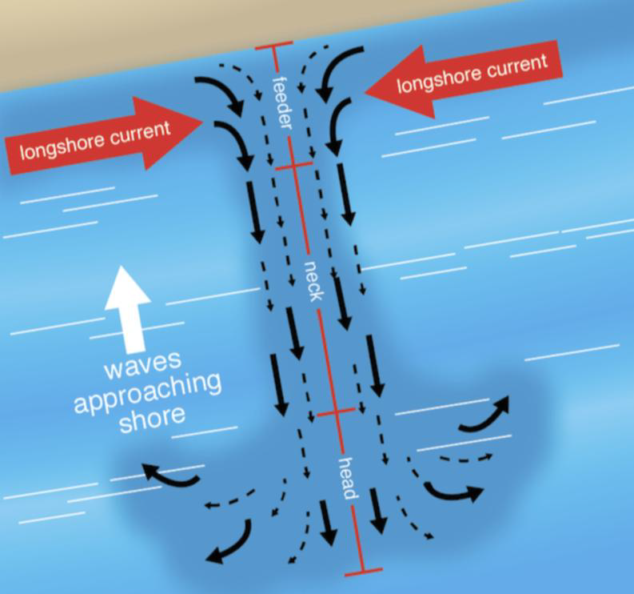
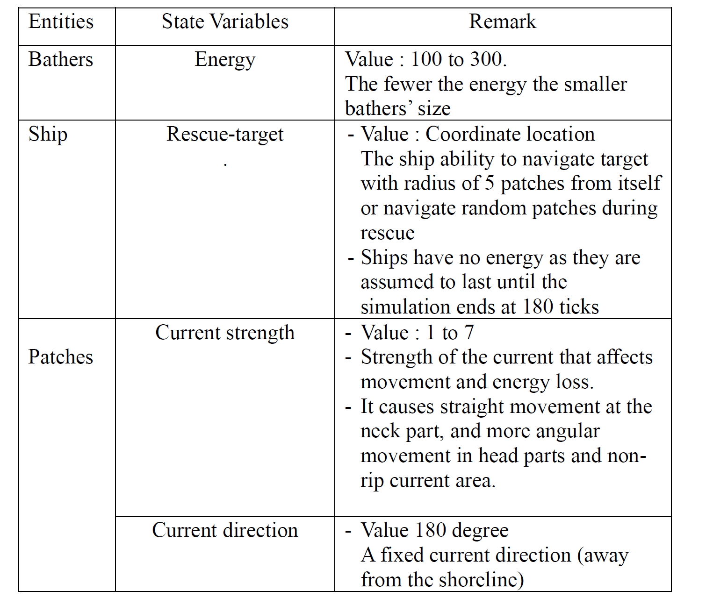
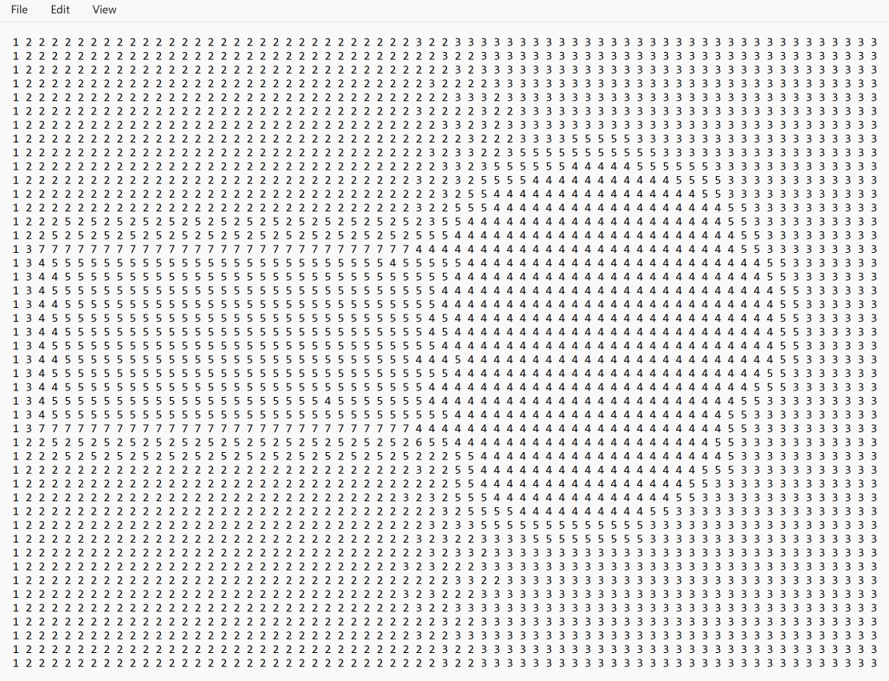
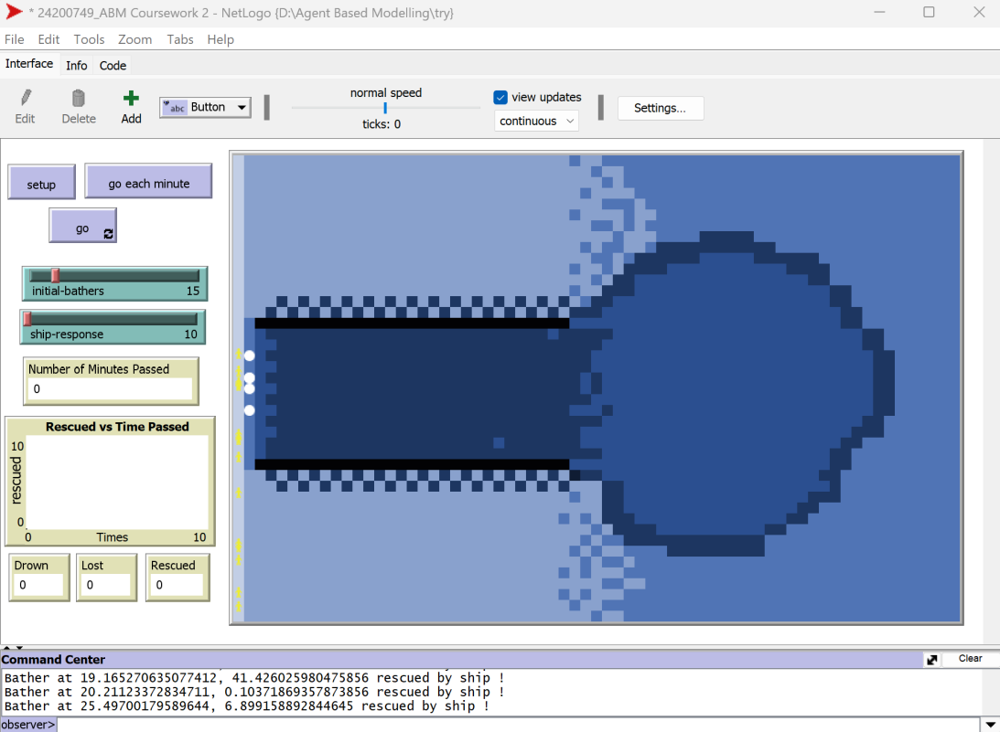

Modelling Rip Current Rescue using Agent Based Modelling
As a planner, the part of our job is to model a city……which is utterly complex! and then we want to make the ‘computer’ do exactly what we want. How could we build a complex model when we could not even model a simple entity? this is one of main reason draws me to Agent Based Modelling (ABM). Unlike other programming languange I’ve learnt, ABM holds a special place in me because it could turn my abstract or wildest idea into a digital model. Like we could build a game from scratch, that’s fun! As part of the challenge in the assessment during my time in CASA, I create a model inspired by beach hazard incidents in my hometwon in early 2024, caused by a rip current. Here we go……..
Context
Rip Current is often termed as a beach hazard which make a best swimmer struggle to swim against, as it causes panic and exhaustion lead to drowning (Brighton et al., 2013). The overall purpose of this model is to understand how different response times influence the rescue of bathers’ accident on a beach where rip currents exist. Specifically, we address this question : How is different response times influence the rescue of drowned and lost bathers on a beach with rip currents?
To ensure the model is realistic enough to portray rip currents, I use patterns in rip currents’ morphology and current strength. Rip currents is characterised by channels of strong currents (rip neck) flowing from the shore out to sea (rip head) before it weakens (MacMahan, Thornton and Reniers, 2006). The currents drag object away from the shoreline rapidly compared to its surrounding. Rescue operation in this situation is racing with time, as the time passed the survival rates dropped and searching area will bigger while water currents significantly influence bathers’ movement (Grewe and Griva, 2024).

Figure 1 Rip Current Anatomy. Source : University of Hawai’i
Entities and State Variables

Global variables track drowned, lost, and rescued bathers while initial bathers and rescue time can be modified. Meanwhile, the model spans 66 x 42 grids, each grid represents 20m x 20m. Each tick represents one minute, and the simulation will end after 180 minutes. The strength of rip currents differ depends on the beach topography however in this model we use the recorded current strength of 1 m/s (Yuan et al., 2023) thus bathers moving one patch away equals with 20 m away from the shoreline on each tick.
Modelled Patches

Figure 2 Modelled Patches, each number represent the strength current

Figure 3 Netlogo interface result
Process overview and scheduling
The intuition of the process repeated upon every tick are the bathers will be dragged away from the shoreline with movement depends on the currents’ strength. The movement will cost bathers energy, thus energy will be updated every ticks with detail as follows:
neck area, each patches cost 4 to 7 energy
head, each patches costs 4 to 5 energy
In non-rip currents area near the shoreline, each patch will cost 2 energy
In non-rip currents area away from the shoreline cost 3 energy
After that, when the response time set, the ship will navigate its direction depending on target availability in radius of 5 patch either move randomly or to rescue. Upon sensing the target, the ship will move forward faster of 5 patch else it moves 2 patches. After that, when the ship is near enough (radius 3) with the bathers it will rescue, by turning the bathers into pink, and trigger rescued counter. At the same time, in other location bathers which energy depleted will trigger drown counter and bathers hit the right edge will trigger lost counter.